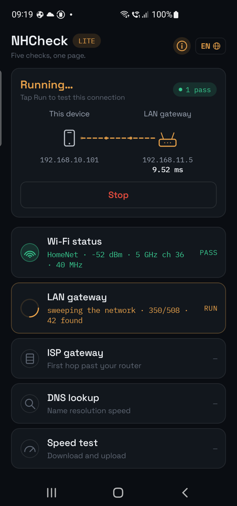
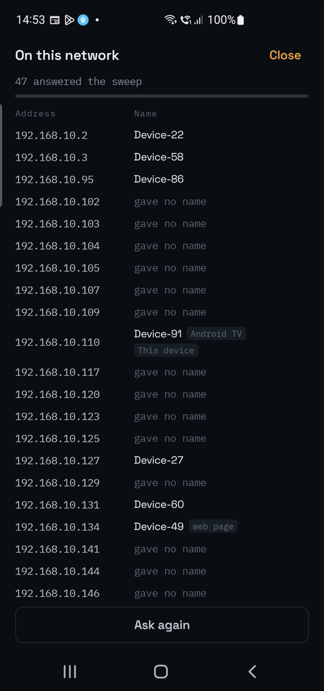

NHCheck Lite
Five checks run in order, about thirty seconds in all. The speed test is last because it saturates the connection and would corrupt the figures before it. Two of the rows open into a page of their own: the air around you, and the devices on your network.
| Check | What it does |
|---|---|
| Wi-Fi status | Reads signal, noise, channel, band, standard and security, then scans the neighbours and names the clearest channel in the band |
| LAN gateway | Eight echoes to your router — latency, loss and jitter of the Wi-Fi link itself — then a sweep of the network behind it, counting what answered |
| ISP gateway | Finds the first public router past yours and measures it with six echoes |
| DNS lookup | Resolves a name through your network's resolver and times it |
| Speed test | Download then upload, eight seconds each over parallel streams, measured after a warm-up |

| PASS | Measured, and inside every target |
| WARN | Measured, and outside at least one — the recommendation says which |
| FAIL | Nothing answered, the name did not resolve, or no data moved |
| SKIP | Not measured, and not a fault — the network's policy prevented it |
| Check | WARN when | FAIL when |
|---|---|---|
| Wi-Fi | Signal below −67 dBm · signal-to-noise below 25 dB · another network on your channel · three overlapping · radar-shared channel · open or outdated security | Not connected |
| LAN gateway | Loss 1% or more · average over 100 ms · jitter over 60 ms, or larger than the link's own average | No reply |
| ISP gateway | Loss 1% or more · average over 150 ms · jitter over 60 ms | — |
| DNS | Slower than 300 ms | Did not resolve |
| Speed | Download below 5 Mbps · upload below 1 Mbps | A direction moved nothing |
A silent ISP gateway is reported as SKIP, not FAIL: those routers ignore probes as routine policy. A direction that moves nothing is reported as a failure with its reason, never as 0.00 Mbps.
The Wi-Fi row opens an analyser. Every network in range is drawn as an arc over the spectrum it occupies, so two networks nominally on different channels are visibly on top of each other when they overlap. Beside it, every radio ranked by strength, and your own link traced second by second — signal as bars, signal-to-noise as a red line over them — so a sag shows as a shape rather than disappearing into an average.
The LAN row opens the list of what is on your network: every address that answered the sweep, with the name it publishes — a hostname, a UPnP name, or the service it advertises — your router and this phone marked. The names come from the announcements those devices already broadcast, over mDNS, SSDP and Bonjour. They are read on your device, shown on it, and held only while the app is open; see the privacy policy.

Android requires a location permission before an app may read the connected Wi-Fi network's name or scan for neighbours. NHCheck Lite asks for it for that alone: it never requests a location fix, never touches GPS, and never reads location in the background. Decline it and every check still runs — you lose the network name, the channel advice and the analyser's neighbour list. See the privacy policy.
| Platform | Android phone or tablet |
| Price | Free — no subscription, no advertising |
| Languages | English, العربية, Español, اردو, Português and Français — switched in place, with Arabic and Urdu laid out right to left |
| Appearance | Dark, light, or whatever the phone is set to |
| Account | None |
The speed test moves real data — on a 100 Mbps connection, roughly 100 MB each way. Be deliberate about running it on a metered plan.